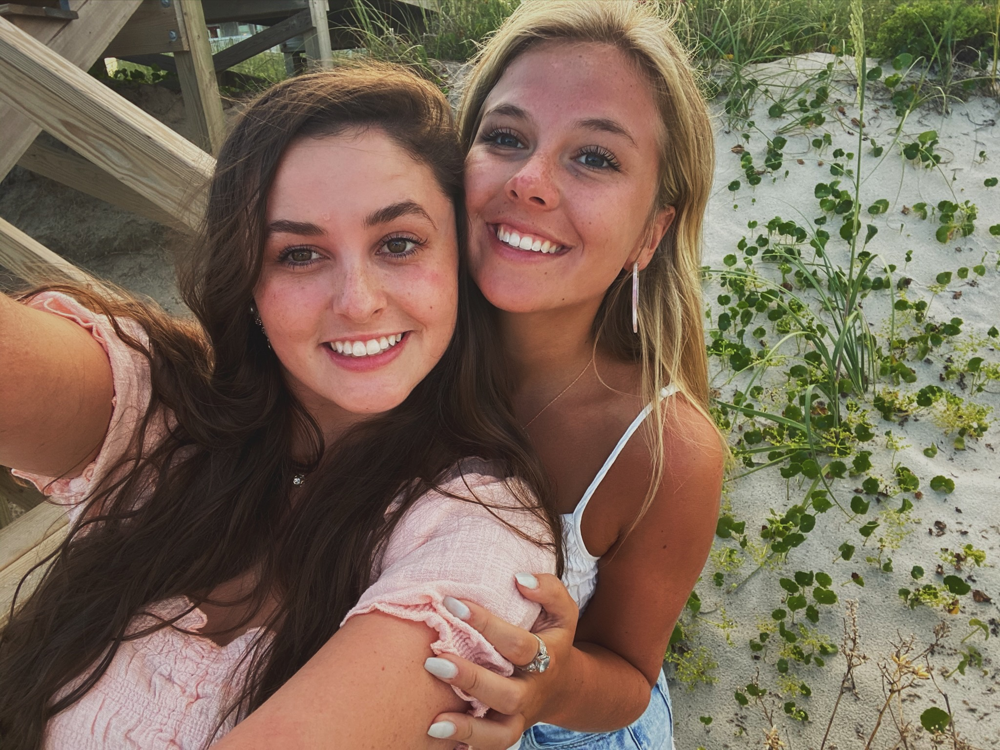

Bio
 My name is Emily Mulholland. I was born on November 22, 2002 (aka the best day of my parent's life), so I just turned 18! I am a senior in high school at Saint Joes. I have gone to school here since the 6th grade and I've liked for the most part. Anyways, I have played basketball since I was little and I have always loved sports. I have done Youth In Government since the eighth grade and I even got accepted into Palmetto Girls State this past summer. I couldn't go because of stupid COVID :( I have two sisters, one older and one younger, and we are all really close. My little sister, Elaina, is a sophomore at SJCS, and my older sister, Caitlin, is a first year teacher at Hollis Elementary. My mom is a physical therapist at the Saint Francis offices downtown. I am on the Diocesan E-Team and I work at Clean Juice.